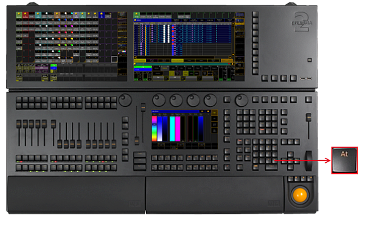
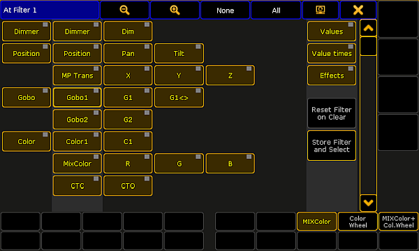

At Key
The key At is located in the command area on the right of the key If.

Location key At
- Pressing At enters At keyword into the command line.
[Channel]> At
- Pressing At At executes the Normal command. The values of the selected fixtures or channels are set to their defined normal values.
Executing: Normal
- Pressing and holding At for 2 seconds, opens the pop-up At Filter.

Pop-up At Filter
If the At key is flashing, an attribute filter is active.
- Pressing and holding
 + At enters the Stomp keyword into the command line.
+ At enters the Stomp keyword into the command line.
[Channel]> Stomp
- Pressing and holding + At At enters the Extract keyword into the command line.
[Channel]> Extract